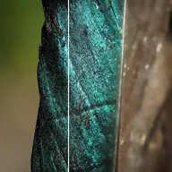

ڈینائز

تصویر کا نوائز دور کرتا ہے، ایج محفوظ رکھنے والے بائی لیٹرل فلٹر سے جو قریبی پکسلز کو صرف اسی وقت ملاتا ہے جب ان کے رنگ ملتے جلتے ہوں۔
ڈی نوائز گریں اور نوائز کو ہٹاتا ہے جبکہ کناروں کو تیز رکھنے کی کوشش کرتا ہے۔ اسٹرینتھ سے مراد ہے کہ کتنا نوائز ہٹایا جاتا ہے، ریڈیس سے کہ ہر پکسل کے اردگرد کتنی دور تک دیکھا جاتا ہے، اور ڈیٹیل سے کہ کتنی باریک تفصیل برقرار رکھی جاتی ہے۔ زیادہ مقدار جلد اور سطحوں کو فلیٹ دکھاتی ہے۔
سیٹنگز
| سیٹنگ | قسم | رینج | ڈیفالٹ |
|---|---|---|---|
| اسٹرینتھ | نمبر | 0 سے 1 تک | 0.5 |
| ریڈیس | نمبر | 1 سے 6 تک | 2 |
| ڈیٹیل | نمبر | 0 سے 1 تک | 0.5 |